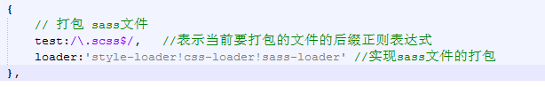
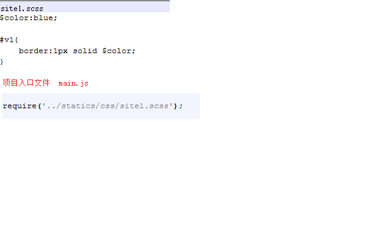

1.1. webpack介绍
webpack是一个资源的打包工具，目前最新为webpack3，可以将 .js, .css , image等静态资源当做一个模块来进行打包，那么每一种模块都是有一个对应的 loader来实现
node环境的安装:
webpack是基于nodejs运行的，所以在安装webpack之前必须先安装nodejs环境,
安装步骤如下
1、去 https://nodejs.org/en/ 中下载当前操作系统匹配的版本,windows下软件
名称通常叫做 node.exe
2、双击node.exe一路安装好，由于node.exe已经包含了npm工具，所以npm也能正常
使用了
3、由于直接使用npm install 安装第三方包是去国外网站上下载，有可能会被墙而
安装失败，所以我们要将下载源切换到国内淘宝上因此需要利用 npm install nrm
-g安装一个全局的nrm
4、安装好nrm以后，在cmd命令面板中输入： nrm use taobao 将下载源切换到淘宝
，可以使用 nrm ls 查看当前使用的下载源
5、也可安装淘宝提供的类似于npm的工具 cnpm来替代npm安装node包,安装包命令
和npm一样，安装cnpm命令： npm install cnpm -g
webpack的安装:
安装webpack步骤：
第一种安装方式：npm使用国外镜像下载，速度慢
在cmd命令行面板中 执行： npm install webpack@3.4.0 -g 将webpack
安装为全局就能够在cmd命令行面板中使用webpack指令了
第二种安装方式：cnpm 使用淘宝作镜像下载，速度快
在cmd命令行面板中 执行： cnpm install webpack@3.4.0 -g 将webpack
安装为全局就能够在cmd命令行面板中使用webpack指令了
1.1.1. webpack常用指令和webpack.config.js配置文件
webpack 入口文件.js 输出文件.js
webpack // 最基本的启动webpack的方法，默认查找名称为 webpack.config.js文件
webpack --config webpack.config.js // 指定配置文件
webpack -p // 对打包后的文件进行压缩
如果只在cmd命令面板中输入 webpack指令，后面不跟任何参数的话，
则默认查找的是 webpack.config.js文件，在这个文件中可以配置入口文件，
输出文件以及相关loader和插件等,以增强webpack的功能
// 导入html-webpack-plugin 包，用来根据模板自动生成index.html
var htmlwp = require('html-webpack-plugin');
module.exports={
entry:'../src/main.js', // 1.0 定义打包的入口文件路径
output:{
path:'../dist', //打包以后的文件存放目录
filename:'build.js' // 打包以后生成的文件名称
},
module:{
loaders:[ //webpack2及其以上也可以使用 rules:[]
{
// 打包 .css文件
test:/\.css$/,
loader:'style-loader!css-loader'
}
]
},
plugins:[
new htmlwp({
title: '首页', //生成的页面标题
filename: 'index.html', //webpack-dev-server在内存中生成的文件名称，自动将build注入到这个页面底部，才能实现自动刷新功能
template: 'index1.html' //根据index1.html这个模板来生成(这个文件请你自己生成)
})
]
}
1.1.2. webpack中loader介绍
loader介绍
webpack本身不支持css,less,sass,js,image等相关资源的打包工作的，它仅仅提供了一个基础的框架，
在这个框架上借助于相关的loader才可以实现css,less,sass,js,image等相关资源的打包工作
1.1.3. webpack相关配置
在使用loader之前需要在当前项目目录下打开cmd命令面板，输入: npm init 初始化一个 package.json文件来存放相关的 loader包
1.1.3.1. 打包css资源演示
webpack中使用css-loader和style-loader这两个loader来处理css资源的打包工作，所以使用前必须在项目中先安装这两个包:
npm i css-loader style-loader --save-dev
在webpack.config.js中配置这两个loader
在项目中建立一个site.css文件，并且在main.js中导入

在cmd中执行webpack命令
1.1.3.2. 打包sass资源演示
webpack中使用sass-loader，css-loader，style-loader来处理.scss文件的打包工作,
而sass-loader需要依赖于node-sass所以使用前必须在项目中先安装这些包，
并且node-sass的某些文件下载是需要去google上的，为了防止被墙而导致安装失败，所以建议使用cnpm来安装：
cnpm install node-sass sass-loader css-loader style-loader --save-dev
在webpack.config.js中配置这两个loader
在项目中建立一个site1.scss文件，并且在main.js中导入
在cmd中执行webpack命令
在项目根目录下打开cmd命令面板，输入：webpack 回车即可打包完成 此时检查build.js文件的内容，sass语法是变成了css语法表示打包成功
1.1.3.3. 打包less资源演示
需要安装的node包有：
css-loader： 编译css
style-loader：编译css
less-loader： 编译less
less: less-loader的依赖包
在项目根目录下打开cmd命令面板，输入：
npm install less less-loader style-loader css-loader --save-dev 回车即可完成安装
在根目录下打开cmd命令面板，输入：webpack 回车即可打包完成
此时检查build.js文件的内容，less语法是变成了css语法表示打包成功
1.1.3.4. 打包url()请求的资源
需要安装的node包有：
url-loader：打包通过url()方式的请求资源
file-loader: url-loader的依赖loader
在项目根目录下打开cmd命令面板，输入：
npm install url-loader file-loader --save-dev 回车即可完成安装
在项目根目录下打开cmd命令面板，输入：webpack 回车即可打包完成
检查是否成功分两种情况：
1、如果打包的图片大小大于配置文件中 url-loader?limit= 中的limit值的话，则会在目录下看到一张单独的一个图片
2、如果打包的图片大小小于等于配置文件中 url-loader?limit= 中的limit值的话，则会将图片以base64格式存储在build.js中
请按照上述两种情况去验证是否打包成功
1.1.3.5. ECMAScript6语法转ECMAScript5语法
webpack2+已经能够不需要依赖于babel-loader 即可完成ES6语法的转换，但是如果使用的是webpack1则还需要安装相关包：
babel-core
babel-loader
babel-preset-es2015
babel-plugin-transform-runtime：这个包主要是使用webpack1.0打包.vue组件页面中的es6语法需要,webpack2+中不需要
在项目根目录下打开cmd命令面板，输入：
npm install babel-core babel-loader babel-preset-es2015 babel-plugin-transform-runtime --save-dev 回车即可完成安装
import '.../statics/css/site.css'
在项目根目录下打开cmd命令面板，输入：webpack 回车即可打包完成
检查build.js文件中，如果出现了类似于 require('.../statics/css/site.css');
但是看不到import '.../statics/css/site.css' 表示转换成功
1.1.3.6. 利用webpack-dev-server实现热刷新配置
我们在修改了代码以后需要不断的重新执行webpack命令重新打包然后回到浏览器刷新页面去查看，这种开发效率很低下，
所以这里使用webpack-dev-server当代码更新的时候自动重新打包和刷新浏览器。
需要安装的node包有：
webpack@3.4.0 : webpack-dev-server依赖于webpack
webpack-dev-server@2.6.1 ： webpack开发服务器
html-webpack-plugin@2.28.0 ：结合webpack在内存中自动生成index.html的入口文件
在项目根目录下打开cmd命令面板，输入：
npm install webpack@3.4.0 webpack-dev-server@2.6.1 html-webpack-plugin@2.28.0 --save-dev 回车即可完成安装
需要注意的是：package.json中的name属性不能是webpack，否则在执行 npm i webpack --save-dev的时候会报错：
Refusing to install webpack as a dependency of itself
"scripts": {
"dev":"webpack-dev-server --inline --hot --open --port 5008"
}
参数说明：
--inline :自动刷新
--hot :热加载
--port 指定监听端口为 5008
-- open : 自动在默认浏览器中打开
-- host： 可以指定服务器的ip，不指定默认为127.0.0.1(localhost)
webpack-dev-server要实现浏览器自动刷新，必须要利用html-webpack-plugin在内存中生成index.html页面才能实现
html-webpack-plugin 配置步骤：
1、在webpack.config.js中加入如下代码：
// 导入html-webpack-plugin 包,获取到插件对象
var htmlwp = require('html-webpack-plugin');
plugins:[
new htmlwp({
title: '首页', //生成的页面标题，需要在模板index1.html中的title中使用：<%= htmlWebpackPlugin.options.title %>
filename: 'index.html', //webpack-dev-server在内存中生成的文件名称，自动将build注入到这个页面底部，才能实现自动刷新功能
template: 'index1.html' //根据index1.html这个模板来生成(这个文件请程序员自己生成)
})
]
在cmd中执行npm run dev 命令开启 webpack-dev-server服务器来运行vue项目
这时候可以随便修改一个css样式，就会自动刷新看到效果
1.1.3.7. 利用webpack解析和打包 .vue组件页面
Vue项目中的每个页面其实都是一个.vue的文件，这种文件，Vue称之为组件页面，必须借助于 webpack的vue-loader才能使用
所以必须安装相关包：
vue : vuejs核心包
vue-loader ： .vue文件编译loader
vue-template-compiler ： .vue模板编译,被vue-loader所依赖
babel-plugin-transform-runtime : es6实时转换成es5语法
1、在项目根目录下打开cmd命令面板，输入：
npm install vue-loader@11.3.4 vue-template-compiler@2.2.6 babel-plugin-transform-runtime@6.23.0 --save-dev 回车即可完成安装
npm install vue@2.2.6 --save 回车即可完成安装
注意：babel-plugin-transform-runtime 这个包主要是为了兼容webpack1.x中使用，webpack2+中可以不用
为了兼容webpack1.x，2.x,3.x 拷贝上面的安装命令全部安装即可
2、在项目根目录下新建 .babelrc文件，内容填写如下：
{
presets: ['es2015'],
plugins: ['transform-runtime'] //这句代码就是为了解决webpack1.x中打包.vue文件不报错，在webpack2+中正常
}
3、在webpack.config.js中的loaders中增加
{
// 打包.vue文件
test:/\.vue$/, //表示当前要打包的文件的后缀正则表达式
loader:'vue-loader' //
}
1、npm install vue --save
2、在main.js中编写解析.vue的代码
// 1.0 导入vue这个包
import Vue from 'vue';
// 2.0 导入 App.vue文件
import App from '../App.vue';
// 3.0 将App中的内容编译解析出来替换index.html中的<div id="app"></div></kbd>
new Vue({
el:'#app',
// render:function(create){create(App);} es5语法
render:create=>create(App) //es6语法
});
1.2. 项目中使用的ECMAScript6语法总结
1、对象的写法
es5中对象： {add:add,substrict:substrict}
es6中对象： {add,substrict} 注意这种写法的属性名称和值变量是同一个名称才可以简写，否则要想es5那样的写法,例如： {addFun:add}
2、在对象中的方法的写法
es5中对象： {add:function(){},substrict:function(){}}
es6中对象： {add(){},substrict(){}}
3、对象的导出写法
es5两种形式：
1、module.exports = fucntion (){};
2、exprots.add = fucntion (){};
es6中写法：
1、export default{
add(){}
}
2、export fucntion add(){} 相当于 将add方法当做一个属性挂在到exports对象
4、对象的导入
es5: var add = require('../calc.js');
es6:
如果导出的是：export default{ add(){}}
那么可以通过 import obj from '../calc.js'
如果导出的是：
export fucntion add(){}
export fucntion substrict(){}
export const PI=3.14
那么可以通过按需加载 import {add,substrict,PI} from '../calc.js'
5、es6中的箭头函数的写法
箭头的演变过程：
//需求：利用函数实现倒序排列
[2,1,3].sort(function(x,y){return y - x;});
//用箭头函数实现 =>读 goes to
[2,1,3].sort((x,y)=>{return y - x;});
[2,1,3].sort((x,y)=> {x++;y++; y - x;});
[2,1,3].forEach(x=> {console.log(x)});
1.3. Vue 官方命令行工具快速搭建大型单页应用
咱们前面从0到1带领大家一步步搭建了属于自己的WebPack+Vue项目，但其实Vue官方提供了一个快速搭建大型单页应用的工具Vue-cli
该工具提供开箱即用的构建工具配置，带来现代化的前端开发流程。只需几分钟即可创建并启动一个带热重载、保存时静态检查以及可用于生产环境的构建配置的项目
Vue-cli使用步骤
- 1、在cmd命令面板中执行：npm install --global vue-cli 全局安装 vue-cli;
- 2、利用：vue init webpack projectName(自定义项目名称) 创建一个基于webpack模板的新项目;
- 3、进入到项目名称文件夹中执行 npm install 安装项目所需依赖;
- 4、运行 npm run dev 运行项目;